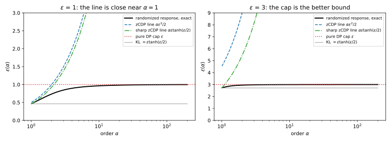

29 Concentrated differential privacy
29.1 Why this matters
You run a pipeline of Gaussian releases, such as noisy counts, answers in a query system or noisy marginals for synthetic data, and you want to keep the differential privacy (DP) budget as one number that you add to as you go. Rényi DP describes each mechanism by a curve: its Rényi differential privacy (RDP) curve \(\varepsilon(\alpha)\) gives, for each order \(\alpha > 1\), the largest Rényi divergence between the outputs on neighbouring datasets, which differ in one person’s record. Composition adds the curves. For the Gaussian mechanism with noise multiplier \(\sigma\), the noise standard deviation in units of the sensitivity, the curve is a straight line through the origin, \(\varepsilon(\alpha) = \alpha/(2\sigma^2)\). A line through the origin is fixed by its slope, so for Gaussian noise one number already carries everything.
Zero-concentrated differential privacy (zCDP), the most widely used form of concentrated differential privacy (CDP), turns that observation into a definition: describe any mechanism by the slope of a line through the origin that lies above its RDP curve. Lines add to a line, so composition is addition of slopes, and converting a line to \((\varepsilon, \delta)\) has a closed form. The rest of the chapter asks one question: how well does a line fit the curve? For the Gaussian, exactly. For pure DP mechanisms with large \(\varepsilon\), badly. For the subsampled steps of differentially private stochastic gradient descent (SGD), DP-SGD for short, it fits so badly that zCDP is the wrong tool.
29.2 The definition of zCDP
A mechanism \(M\) is \(\rho\)-zCDP if its RDP curve lies under the line of slope \(\rho\): for all neighbours \(D \simeq D'\) and all orders \(\alpha > 1\), \[D_\alpha\big(M(D)\,\|\,M(D')\big) \le \rho\alpha. \tag{29.1}\] Because RDP curves add under composition, so do the lines above them: a \(\rho_1\)-zCDP step followed by a \(\rho_2\)-zCDP step is \((\rho_1 + \rho_2)\)-zCDP, even when the second step is chosen after seeing the first one’s output. Post-processing cannot increase a divergence, so it cannot increase \(\rho\) either.
The Gaussian mechanism, which adds \(\mathcal N(0, \sigma^2)\) to a query with \(\ell_2\) sensitivity \(\Delta\), is \(\Delta^2/(2\sigma^2)\)-zCDP, and the line is its exact curve. The reason also explains the name. The privacy loss of an output is the log of how much more likely it is under \(D\) than under \(D'\). For two normal densities with the same variance, that log-ratio is a linear function of the output, and a linear function of a normal variable is normal: with \(\Delta = 1\) the loss has mean \(1/(2\sigma^2) = \rho\) and variance \(1/\sigma^2 = 2\rho\). zCDP in general says the privacy loss has tails no heavier than this normal variable, “concentrated” around a small mean.
With \(\sigma = 1\) one Gaussian step is \(0.5\)-zCDP and ten are \(5\)-zCDP; with \(\sigma = 2\) a step costs \(0.125\). Halving the noise multiplier multiplies \(\rho\) by four, because \(\rho\) goes with the square of the shift in units of the noise. The 2020 United States Census TopDown algorithm is built this way (Abowd et al. 2022): it measures many noisy queries with the discrete Gaussian mechanism (Discrete and floating-point-safe mechanisms), adds up the \(\rho\)’s, and converts to \((\varepsilon, \delta)\) once, at the end. For Gaussian noise the line loses nothing, so the only approximation is that final conversion.
Two warnings. \(\rho\) is not \(\varepsilon\): \(\rho = 0.5\) is about \(\varepsilon = 4.7\) at \(\delta = 10^{-5}\) (Section 29.4). And the ledger covers only what passed through the noise: the Census Bureau released some statistics, the invariants, exactly; they were never charged to \(\rho\), and they sit outside the guarantee.
29.3 Pure DP steps in a zCDP budget
A Laplace count, a randomized-response bit or an exponential-mechanism selection is pure \(\varepsilon\)-DP, and to put it in the same ledger you need its \(\rho\). Pure DP means every output’s probability changes by at most a factor \(e^\varepsilon\), so its privacy loss is confined to \([-\varepsilon, \varepsilon]\). A bounded random variable has light tails, at most as heavy as a normal’s, so the step should be zCDP with \(\rho\) of order \(\varepsilon^2\). Bun & Steinke (2016) show that every \(\varepsilon\)-DP mechanism is \((\varepsilon^2/2)\)-zCDP. The exponential mechanism does four times better, \(\varepsilon^2/8\), because its privacy loss lies in an interval of length \(\varepsilon\) rather than \(2\varepsilon\), and the tail bound goes with the square of the length (Cesar & Rogers 2021).
So a Laplace count at \(\varepsilon = 0.1\) costs \(0.005\). The constant \(\varepsilon^2/2\) is the right one only as \(\varepsilon \to 0\). Randomized response, which reports a bit truthfully with probability \(e^\varepsilon/(1 + e^\varepsilon)\), is the worst \(\varepsilon\)-DP mechanism at every order, and its smallest valid slope is \(\varepsilon\tanh(\varepsilon/2)\): \(0.4621\) at \(\varepsilon = 1\), against \(\varepsilon^2/2 = 0.5000\).
The trouble is at large orders. No Rényi divergence can exceed the largest log-ratio of probabilities, so the RDP curve of a pure DP step flattens at \(\varepsilon\), while a line keeps rising. The curve therefore lies under both, \[\varepsilon(\alpha) \le \min\Big(\varepsilon,\ \frac{\alpha\varepsilon^2}{2}\Big), \tag{29.2}\] and a zCDP accountant can keep only the line. For randomized response at \(\varepsilon = 1\) the line is close near \(\alpha = 1\), but at \(\alpha = 50\) it says 25 where the exact curve is 0.9936; the cap is within 1% there (Figure 29.1, left).

The larger \(\varepsilon\) is, the sooner the line crosses the cap, since it does so at \(\alpha = 2/\varepsilon\). At \(\varepsilon = 3\) the slope \(\varepsilon^2/2 = 4.5\) is already above the cap at \(\alpha = 1\), so the line is worse than plain \(\varepsilon\) at every order (Figure 29.1, right). Charging a large-\(\varepsilon\) step in \(\rho\) then makes it more expensive than it is: a \(5\)-DP step charged \(12.5\) converts to a worse \(\varepsilon\) than the 5 you started with. This is the usual situation in local DP, where each user randomizes their own data. Keep such steps as \(\varepsilon\) or as an RDP curve; an RDP accountant can charge them the exact curve of randomized response, below both bounds.
29.4 From zCDP to (ε, δ)
Whatever you account in, you report \((\varepsilon, \delta)\). The conversion of From Rényi DP to (ε, δ) gives a valid \(\varepsilon\) at every order, and you take the best. Write \(\ell = \ln(1/\delta)\). For a line the conversion at order \(\alpha\) is \(\rho\alpha + \ell/(\alpha - 1)\): the first term grows with the order and the second shrinks, so the best order balances them, at \(\alpha^* = 1 + \sqrt{\ell/\rho}\). Substituting gives the simple conversion (Bun & Steinke 2016), \[\varepsilon = \rho + 2\sqrt{\rho\,\ell}. \tag{29.3}\]
Modern accountants use the sharper improved conversion of Canonne, Kamath & Steinke (2020), which adds two correction terms at each order and is minimized numerically: \[\varepsilon = \min_{\alpha > 1}\left[\rho\alpha + \frac{\ell}{\alpha - 1} + \ln\Big(1 - \frac1\alpha\Big) - \frac{\ln\alpha}{\alpha - 1}\right]. \tag{29.4}\] How much do the two lose? For a Gaussian the line is the exact RDP curve, so any gap between the reported and the true \(\varepsilon\) comes from the conversion alone, and the true value is known in closed form (f-DP and Gaussian differential privacy). One Gaussian step with \(\sigma = 1\) is \(\rho = 0.5\). At \(\delta = 10^{-5}\), where \(\ell = 11.5129\), the simple formula gives 5.299, the improved conversion 4.728, and the exact value is 4.377: the simple formula is 21% too large and the improved one 8% (Table 29.1, Figure 29.2).
| \(\rho\) | Simple Equation 29.3 | Improved Equation 29.4 | Exact, Gaussian with the same \(\rho\) |
|---|---|---|---|
| 0.01 | 0.689 | 0.546 | 0.497 |
| 0.1 | 2.246 | 1.914 | 1.760 |
| 0.5 | 5.299 | 4.728 | 4.377 |
| 1 | 7.786 | 7.077 | 6.573 |
| 5 | 20.174 | 19.047 | 17.857 |
| 50 | 97.985 | 96.035 | 91.817 |

So two systems with the same \(\rho = 0.5\) can quote 5.299 and 4.728 only because they used different conversions; say which one you used. For a pipeline made only of Gaussian mechanisms on the full data, report the exact value.
To calibrate, run the simple conversion backwards. A target \((\varepsilon, \delta)\) is met by any \[\rho \le \Big(\sqrt{\varepsilon + \ell} - \sqrt{\ell}\Big)^2, \tag{29.5}\] and the noise multiplier is then \(\sigma = 1/\sqrt{2\rho}\). A single Gaussian step at \((1, 10^{-5})\) needs \(\rho = 0.02082\), that is \(\sigma = 4.901\).
Because the map from \(\rho\) to \(\varepsilon\) is not linear, \(\varepsilon\) does not add and there is no clean “\(\varepsilon\) left”: with a budget of \(\rho = 1\), the whole run is \(7.077\)-DP by the improved conversion however you split it. Add in \(\rho\), and convert once, at the end.
29.5 Group privacy
A household, or a user with several records, differs from a neighbouring dataset in \(m\) records rather than one. For the Gaussian, the group moves the query’s value \(m\) times as far, and its RDP grows with the square of the shift. zCDP inherits exactly this: a \(\rho\)-zCDP mechanism is \(m^2\rho\)-zCDP for datasets that differ in \(m\) records (Bun & Steinke 2016), with equality for the Gaussian.
Quadratic growth is the same price as pure DP’s \(m\varepsilon\), translated: with \(\rho \approx \varepsilon^2/2\), \(m^2\rho \approx (m\varepsilon)^2/2\). A user who contributes up to 4 records to a \(0.1\)-zCDP release is protected at \(\rho = 4^2 \times 0.1 = 1.6\). For the Gaussian with \(\sigma = 1\), a group of 2 costs \(\rho = 2\), or \(\varepsilon = 10.725\) at \(\delta = 10^{-5}\), and a group of 8 costs \(\rho = 32\), or \(\varepsilon = 68.616\). If users contribute many records, bound each user’s contribution before adding noise and account at the user level.
29.6 Subsampling: why DP-SGD is not accounted in zCDP
DP-SGD runs each step on a Poisson sample: each record enters the batch independently with probability \(q\). A record is usually not in the batch, so the step’s RDP curve is tiny at small orders. For the part’s running example, \(q = 0.01\) and \(\sigma = 1\), it stays around \(10^{-4}\alpha\) up to \(\alpha = 8\) (Figure 29.3).
High orders, however, weigh the rarest and most revealing outputs. For the subsampled step those come from the event that the record was in the batch, where it pays the full Gaussian loss. So at large orders the curve bends up, and its slope approaches that of the unsubsampled line \(\alpha/(2\sigma^2)\) (Amplification by subsampling explains the bend). A line through the origin above the whole curve must be as steep as the curve at infinity. For the Poisson-subsampled Gaussian, at any \(q\), the smallest valid \(\rho\) is therefore \(1/(2\sigma^2)\), exactly what the step would cost without subsampling. zCDP throws away all of the amplification.

With \(k = 10{,}000\) steps and \(\delta = 10^{-5}\), zCDP must charge \(\rho = 0.5\) per step, so \(\rho = 5000\) in total and \(\varepsilon = 5479.9\) by the simple formula, or \(5475.8\) with the improved conversion. RDP accounting of the same run, on integer orders, gives \(7.469\) with Mironov’s conversion and \(6.719\) with the improved one. Both are upper bounds, but RDP kept the part of the curve the conversion uses: the small orders. The composed curve is \(k\varepsilon(\alpha)\), and the conversion looks for the order where \(k\varepsilon(\alpha) + \ell/(\alpha - 1)\) is smallest. Below the bend the first term is small, so the conversion pushes the order up until the bend makes the curve expensive, and stops early: here the best integer order is 4. The large orders that set the zCDP slope are never used.
Truncated concentrated differential privacy (tCDP) keeps one number per step but asks for the line only on orders up to a cut-off \(\omega\) (Bun, Dwork, Rothblum & Steinke 2018). Steps compose to \((\sum_i\rho_i, \min_i\omega_i)\), and the conversion is the simple one when its best order lies below \(\omega\), otherwise order \(\omega\): \[\varepsilon = \begin{cases}\rho + 2\sqrt{\rho\,\ell} & \text{if } \ell \le (\omega - 1)^2\rho,\\[2pt] \rho\omega + \dfrac{\ell}{\omega - 1} & \text{otherwise.}\end{cases} \tag{29.6}\] On orders up to \(\omega = 8\), the per-step slope is \(1.1171 \times 10^{-4}\), against zCDP’s 0.5. With \(\omega = 4\), tCDP gives \(7.469\), the same as RDP with Mironov’s conversion, because both end up converting at order 4. But once \(\omega\) passes the bend near \(\alpha = 10\), the slope must cover the steep part, and tCDP collapses towards zCDP: 80.252 with \(\omega = 10\), 2228.027 with \(\omega = 16\).
So never account a subsampled mechanism in zCDP. If a pipeline mixes Gaussian releases with a DP-SGD run, keep it all in RDP: a \(\rho\)-zCDP step is just the RDP curve \(\rho\alpha\) and joins an RDP ledger without loss. Nor is tCDP a practical substitute: RDP does at least as well as any choice of \(\omega\), and tCDP’s general subsampling theorem is loose: with \(\sigma = \sqrt5\) and a 1% sample it gives \(\varepsilon = 9.037\) where RDP gives \(2.046\). That comparison is only indicative: the tCDP theorem assumes fixed-size batches and replace-one neighbours, while the RDP curve assumes Poisson sampling and add/remove (Amplification by subsampling).
29.7 Approximate zCDP
Some useful mechanisms, such as stability-based histograms, are \((\varepsilon, \delta)\)-DP but cannot be zCDP at all: zCDP’s strong group privacy rules them out. Approximate zCDP lets zCDP fail on an event of probability \(\delta_a\), so one ledger holds two columns. An \((\varepsilon, \delta)\)-DP step enters as \(\rho = \varepsilon^2/2\) and \(\delta_a = \delta\). The \(\rho\) column adds and converts as usual; the \(\delta_a\) column adds up to at most \(\sum_i\delta_i\), like \(\delta\) in basic composition. At the end the pipeline is \((\varepsilon, \delta_a + (1 - \delta_a)\delta')\)-DP, where \(\varepsilon\) is any zCDP conversion of \(\rho\) at \(\delta'\) (Bun & Steinke 2016).
The gain comes from the first column. Ten stability-based steps, each \((0.5, 10^{-7})\)-DP, and ten Gaussian steps with \(\sigma = 1\) give \(\rho = 10 \times 0.125 + 10 \times 0.5 = 6.25\) and \(\delta_a = 1.0000 \times 10^{-6}\), so \(\varepsilon = 22.100\) at total \(\delta = 10^{-5}\). Composing the stability steps separately, by basic composition, gives \(19.119 + 5 = 24.119\): in the unified ledger each \(\varepsilon = 0.5\) step costs \(\varepsilon^2/2\) in \(\rho\) rather than its full \(\varepsilon\). A Gaussian step put in the \(\delta_a\) column would waste \(\delta\) for nothing.
29.8 Code
The whole zCDP ledger is a few lines: charge each Gaussian step its \(\rho\), add, convert once. The improved conversion is minimized over the same grid of 20,001 orders that the full edition uses.
from math import log, sqrt
def zcdp_gaussian(sigma: float, sensitivity: float = 1.0) -> float:
"""rho of one Gaussian step; compose steps by adding their rho."""
return sensitivity**2 / (2 * sigma**2)
def zcdp_to_eps_simple(rho: float, delta: float) -> float:
return rho + 2 * sqrt(rho * log(1 / delta))
def zcdp_to_eps_improved(rho: float, delta: float) -> float:
"""Improved conversion, minimized over 20,001 log-spaced orders in (1, 1 + 1e4]."""
best = float("inf")
for i in range(20001):
alpha = 1 + 10 ** (-4 + 8 * i / 20000)
eps = rho * alpha + log(1 / delta) / (alpha - 1) + log(1 - 1 / alpha) - log(alpha) / (alpha - 1)
best = min(best, eps)
return best
def rho_for_target(eps: float, delta: float) -> float:
"""Largest rho whose simple conversion stays within eps at delta."""
return (sqrt(eps + log(1 / delta)) - sqrt(log(1 / delta))) ** 2
rho = 10 * zcdp_gaussian(sigma=1.0) # ten Gaussian steps with sigma = 1
print(f"{rho:.1f}") # 5.0
print(f"{zcdp_to_eps_simple(rho, 1e-5):.3f}") # 20.174
print(f"{zcdp_to_eps_improved(rho, 1e-5):.3f}") # 19.047
r = rho_for_target(1.0, 1e-5)
print(f"{r:.5f} {1 / sqrt(2 * r):.3f}") # 0.02082 4.901The full edition’s script, concentrated_dp.py, computes every number in this chapter, including the subsampled curve and the tCDP values:
uv run python code/part04-privacy-accounting/concentrated_dp.py29.9 Cheat sheet
Here \(\ell = \ln(1/\delta)\).
| Result | Formula | Notes |
|---|---|---|
| \(\rho\)-zCDP | \(D_\alpha \le \rho\alpha\) for all \(\alpha > 1\) | RDP restricted to a line |
| Gaussian mechanism | \(\rho = \Delta^2/(2\sigma^2)\) | Exact: the line is the curve |
| Composition, post-processing | \(\rho\)’s add; processing keeps \(\rho\) | Also for adaptive steps |
| Pure DP step | \(\varepsilon^2/2\), sharply \(\varepsilon\tanh(\varepsilon/2)\); exponential mechanism \(\varepsilon^2/8\) | Poor fit for large \(\varepsilon\) |
| To \((\varepsilon, \delta)\), simple | \(\rho + 2\sqrt{\rho\ell}\) | 21% above exact at \(\rho = 0.5\) |
| To \((\varepsilon, \delta)\), improved | \(\min_\alpha[\rho\alpha + \ell/(\alpha-1) + \ln(1 - 1/\alpha) - \ln\alpha/(\alpha-1)]\) | 8% above exact at \(\rho = 0.5\) |
| Calibration | \(\rho = (\sqrt{\varepsilon + \ell} - \sqrt\ell)^2\), \(\sigma = 1/\sqrt{2\rho}\) | Through the simple conversion |
| Group of \(m\) | \(m^2\rho\) | Exact for the Gaussian |
| Subsampled Gaussian | \(\rho = 1/(2\sigma^2)\) whatever \(q\) | No amplification: use RDP |
| Approximate zCDP | \(\rho\) adds, \(\delta_a\) adds; \((\varepsilon(\rho, \delta'), \delta_a + \delta')\)-DP | For steps that are only \((\varepsilon, \delta)\)-DP |
Rules of thumb
- Keep budgets in \(\rho\), which adds, and convert to \((\varepsilon, \delta)\) once, at the end, with the improved conversion.
- One Gaussian step with \(\sigma = 1\) costs \(\rho = 0.5\), about \(\varepsilon = 4.7\) at \(\delta = 10^{-5}\).
- Charge a small-\(\varepsilon\) pure DP step \(\varepsilon^2/2\); for \(\varepsilon\) of 2 or more, keep its \(\varepsilon\) or its RDP curve.
- Never account a subsampled mechanism, such as a DP-SGD step, in zCDP. Use RDP or a privacy loss distribution.
29.10 Further reading
- Bun & Steinke, “Concentrated Differential Privacy: Simplifications, Extensions, and Lower Bounds” (TCC 2016): the definition, the Gaussian and pure-DP conversions, group privacy and approximate zCDP. Sections 1–3 are the core.
- Canonne, Kamath & Steinke, “The Discrete Gaussian for Differential Privacy” (NeurIPS 2020): the discrete Gaussian with its zCDP guarantee, and the improved conversion with a stable way to compute it.
- Bun, Dwork, Rothblum & Steinke, “Composable and Versatile Privacy via Truncated CDP” (STOC 2018): truncated CDP and its subsampling theorem.
- Abowd et al., “The 2020 Census Disclosure Avoidance System TopDown Algorithm” (Harvard Data Science Review, 2022): zCDP accounting at national scale, and the role of invariants.
Derivations. Every result in this chapter is derived step by step in the full edition’s chapter.